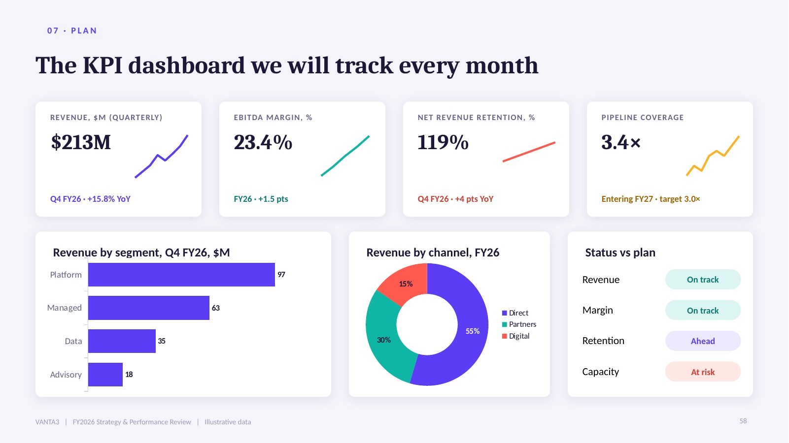

The visual identity, typography, layout system, chart language and animation principles behind the VANTA3 business presentation template.
Version 1.0 | October 2026 | 60-slide 16:9 PowerPoint template
Violet signals intelligence and premium positioning without the sameness of corporate blue; aqua reads as growth and trust; coral provides one confident point of emphasis. The vivid hues sit on a cool, near-white mist and a deep night tone, so contrast stays high without harshness.
Ink on white 17.0:1 · Violet on white 6.1:1 · Aqua-text on white 5.2:1 · Coral-text on white 4.8:1 · Saffron-text on white 4.9:1 · Saffron on Night 10.1:1. Chart labels switch automatically to Ink where white text would fall below 4.5:1.
| Role | Font | Size / weight | Colour |
|---|---|---|---|
| Cover title | Cambria | 50 pt bold | White |
| Chapter title | Cambria | 44 pt bold · number 96 pt Lavender | White |
| Slide title | Cambria | 30 pt bold, left-aligned, one line | Ink |
| Kicker | Calibri | 11 pt bold caps, +2 pt tracking, coral dot | Violet / Aqua on dark |
| Hero number | Cambria | 26–80 pt bold | Violet or accent |
| Card heading | Cambria / Calibri | 15–20 pt bold | Ink |
| Body | Calibri | 13–16 pt regular | Ink / Slate |
| Chart text | Calibri | Axis 11 pt · labels 9–10 pt bold | Slate / Ink |
| Captions, sources | Calibri | 10–12 pt, italic for notes | Slate |
Cambria and Calibri ship with Microsoft Office on Windows and Mac and are available in PowerPoint for the web, so the deck renders without font embedding or substitution.

53 charts across 13 forms: column, bar, stacked, waterfall, funnel, line, area, combo, donut, radar, scatter, bubble and tornado.
| Element | Effect | Timing |
|---|---|---|
| Kicker + title | Fade, with slide entry | 0.5 s, starts immediately |
| Cards & panels | Fade or Wipe from left / right | 0.35–0.5 s, 90–150 ms stagger |
| Column charts | Wipe from bottom (bars grow) | 0.9–1.2 s |
| Bar, line, area, donut charts | Wipe from left (reveals in reading order) | 0.9–1.8 s |
| Scatter, bubble, radar | Subtle Zoom (60% → 100%) with fade | 0.6 s |
| Tables | Wipe from top | 0.6–0.9 s |
| KPI hero numbers | Subtle Zoom | 0.45–0.6 s |
| Timelines & Gantt | Axis wipes first, then items step by step | 0.3–0.5 s per item |
| Slide transition | Fade (content) · Push up (chapters) | Medium / slow |
Write action titles that state the finding (“Asia-Pacific is our fastest-growing large region”), not topics (“Regional data”).
Don'tRepeat a title, or end a title with a full stop.
Keep one dominant colour per slide and use Coral for a single point of emphasis.
Don'tIntroduce new hues, gradients or stock-photo backgrounds.
Build visuals from editable shapes, icons, charts and typography.
Don'tUse any image of people — photographs, portraits, silhouettes, AI-generated figures or illustrated characters.
Edit numbers in the chart's data sheet so labels and bars stay in sync.
Don'tPaste charts as pictures or type values over a chart.
Keep body text at 13 pt or larger and captions at 10 pt or larger.
Don'tShrink text to fit — split the content across two slides instead.
Label illustrative figures clearly; the footer reads “Illustrative data” until you replace it.
Don'tPresent illustrative figures as actual results.